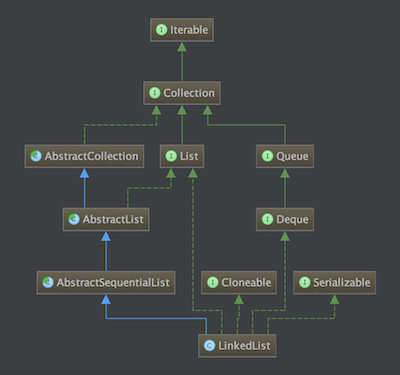

源码基于JDK1.7
LinkedList不仅实现了List接口, 同时还实现了Deque接口, 所以还可以当双端队列去用.

成员变量
transient int size = 0: 保存的元素的个数transient Node<E> first; transient Node<E> last: 分别指向头元素和尾元素的引用构造函数
LinkedList()
方法体是空的, 略过
LinkedList(Collection<? extends E> c)
1 | public LinkedList(Collection<? extends E> c) { |
重点看allAll(c)这行, 这个方法最终调用的是addAll(int index, Collection<? extends E> c), 其中第一个参数传递的是size成员变量, 而c就是构造方法的入参. 这是该方法的实现:
1 | // 参数index表示从列表的什么位置开始插入集合的元素 |
第一行调用的方法是判断下标越界, 代码表示就是: 如果!(index >= 0 && index <= size)则抛出异常, 其中index是入参, size是成员变量.
第三段代码用来确定待插入下下标上的节点succ和它指向前的节点prev, 插入新节点时需要修改prev的next指向到新元素. if判断是否是从尾部开始插入, 在else分支内有个node(index)方法, 该方法就是获取下标为index的元素. 该方法使用一点优化: 如果index在前半段则从头往后遍历, 否则从后尾向前遍历. 实现如下:
1 | Node<E> node(int index) { |
从这个方法可以看出, LinkedList的随机访问性能较差, 因为每次获取一个元素都需要遍历, 时间复杂度为O(n).
第四段代码开始添加新节点, 首先构造一个新节点:
1 | private static class Node<E> { |
如果待插入位置的前节点prev为null则将带插入集合内的第一个元素作为头结点, 否则将prev的先后链接指向新节点, 同时将新节点赋给prev, 这样不停遍历从而将集合内所有元素串起来.
第五段代码是完成双端链表内的指向, 如果是从列表尾部开始插入, 则列表的尾元素赋值为最后一个插入的新节点. 否则需要将最后的新节点的向后链接指向原先下标为index的元素, 又因为LinkedList实现了Deque接口, 可以看做是双端队列, 所以需要将原先下标为index的元素的向前链接指向最后一个插入的新节点. 至此插入完成.
最后是更新列表的元素个数属性size和更新次数属性modeCount.
主要方法
List接口
add(E e)
即向列表尾部插入一个元素, 方法体很简单, 只是调用linkLast(e)之后返回true, 所以直接看linkLast()方法的实现:
1 | void linkLast(E e) { |
也很简单, 构造一个新的节点, 如果当前列表内尾节点为null, 则将新节点作为列表的首节点, 否则将尾节点的先后链接指向新节点. 最后更新列表元素个数和更新次数属性.
E get(int index)
获取指定下标的元素, 方法体如下:
1 | public E get(int index) { |
第一行用于检测下标是否越界, 实际逻辑很简单: 如果!(index >= 0 && index < size)就抛出异常, 然后获取节点.
E remove(int index)
实现:
1 | public E remove(int index) { |
先检测下标是否越界, 然后获取节点后调用unlinke(), 该方法实现:
1 | E unlink(Node<E> x) { |
如果待移除节点是头节点则将第二个节点赋值为头结点, 否则将待移除节点的前一个节点的后向链接指向下一个节点(说的有点绕口, 其实即使移除节点n时, 将n-1节点的next赋值为n+1节点). 如果移除的是尾节点, 将待移除节点的前一个节点赋值为尾节点, 否则将n+1节点的prev赋值为n-1节点. 至此整个链表完整地串起来了. 接着清除节点内保存的数据, 更新链表内节点的个数和链表更新次数.
Queue接口
E poll()
获取并移除头节点, 方法实现很简单:
1 | public E poll() { |
E peek()
获取但不移除头节点, 实现如下:
1 | public E peek() { |
boolean offer(E e)
在队列尾部添加节点, 通过调用add(E e)实现的.
迭代
LinkedList的iterator()方法并无自己的实现, 即调用的是父类AbstractSequentialList的iterator()方法, 该方法在调用父类AbstractList的listIterator()接口最终返回一个ListIterator对象. 下面是方法实现
1 | public ListIterator<E> listIterator() { |
其中rangeCheckForAdd(int index`)方法实现就一段如果index < 0 || index > size()则抛出异常, 即下标不能越界. 然后来看看ListItr`的源码:
1 | private class ListItr extends Itr implements ListIterator<E> { |
比Iterator多了几个判断接口和add,set方法, 其中add用来在当前位置添加新元素, 而set则是更新当前下标位置为新的元素.